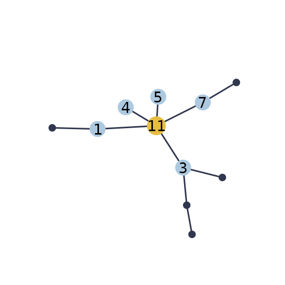
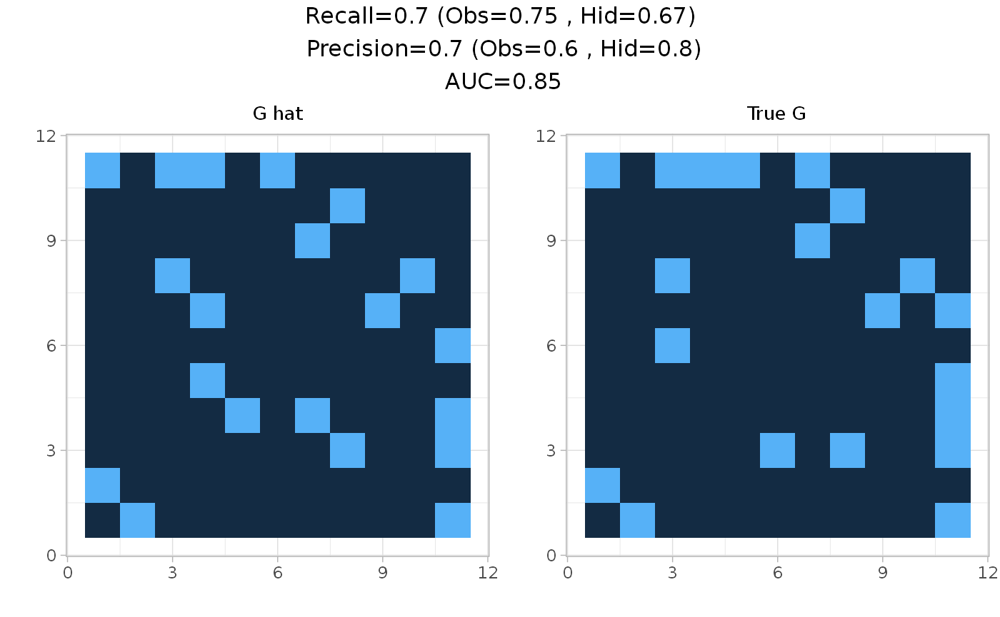
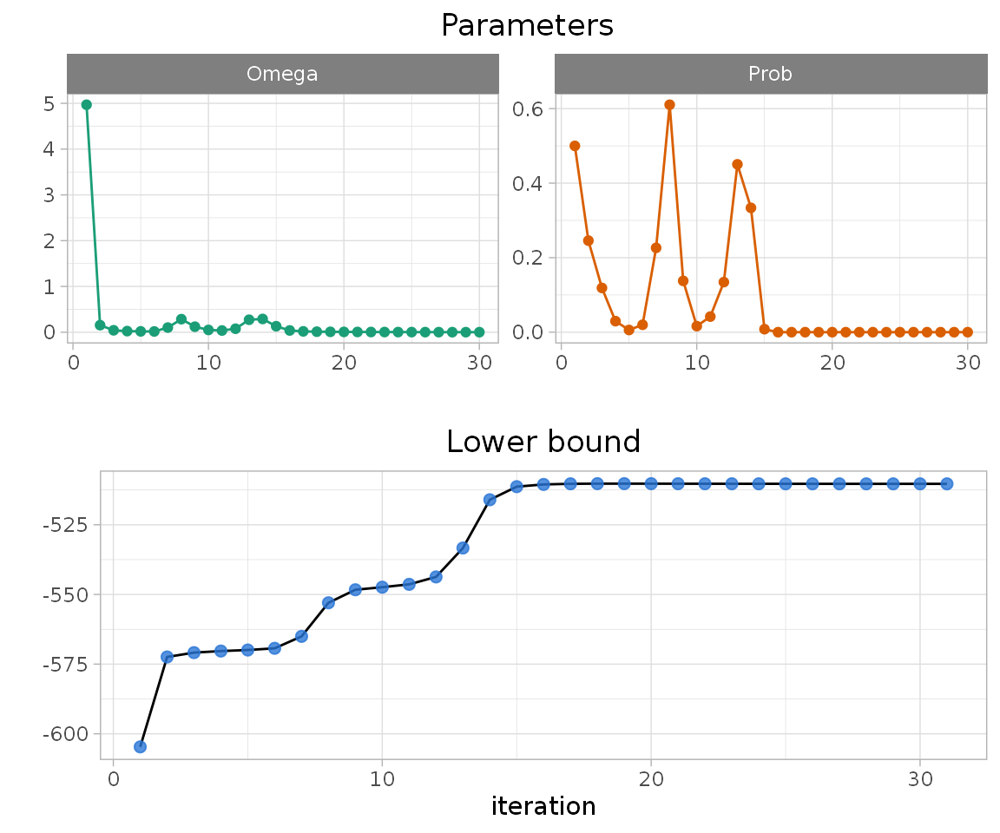
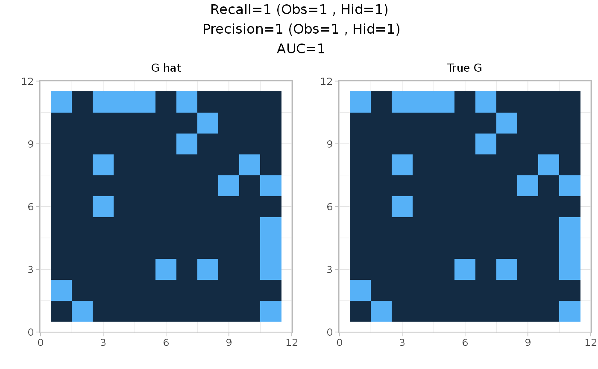

Usage.Rmdnestor can simulate data with with missing actors with the function missing_from_scratch(). It requires the desired type of dependency structure (scale-free, erdos, tree or cluster) and the number of missing actors r. Here is an example with r=1 for the scale-free structure:
library(nestor)
p=10
r=1
n=100
data=generate_missing_data(n, p, r,type="scale-free", plot=TRUE)
The original clique of the missing actor neighbors is available in the value TC:
data$TC
#> [[1]]
#> [1] 1 3 4 5 7The data is then prepared for analysis with the first step of the procedure: fit the PLN model. The norm_PLN() function is a wraper to PLNmodels::PLN() which normalizes all the necessary outputs, namely the mean, variance and correlation matrices of the model latent Gaussian layer corresponding to observed species.
PLNfit<-norm_PLN(data$Y)
MO<-PLNfit$MO
SO<-PLNfit$SO
sigma_obs=PLNfit$sigma_OThe algorithm then needs to be initialized. This requires to find an initial clique of neighbors for the missing actor, for example using the FitSparsePCA() function:
initClique = FitSparsePCA(data$Y,r=1, min.size = 3)$cliques
initClique
#> [[1]]
#> [1] 2 4 6 10The min.size parameter defines the minimal size of the output clique. The function init_mclust() is also available for finding a clique, it uses the package mclust.
Once an initial clique has been found, the algorithm can be initialized. This is the aim of the function initVEM(), which initializes all required parameters. This function builds one initialization from one initial clique. We initialize with the clique previously identified:
initList = initVEM(data$Y, cliqueList=initClique, sigma_obs, MO, r=1 )Then to set the tempering parameter alpha, we can look at the output of the alphaMax() function.
alphaMax(p+r, n)
#> [1] 0.3000768The actual tempering parameter should be lower than the upper bound given by alphaMax(). Here we set alpha to \(0.1\). The core function nestorFit() can now be run as follows:
fit = nestorFit(data$Y, MO,SO, initList=initList, alpha=0.1, eps=1e-3,
maxIter=30)
#>
#> nestor ran in 1.074secs and 30 iterations.The object fit contains inferred means and variances of the complete data, as well as edges weight and probability matrices.
This package contains several visualization functions. plotPerf() gives a quick overview of the fit performance compared to initial graph:
plotPerf(fit$Pg, data$G,r=1)
The convergence of nestorFit() can be checked with the plotting function plotConv():
plotConv(nestorFit = fit)
The fit of the nestorFit() function is very sensitive to the initialization, and so it is recommanded to try several initial cliques. Several functions are available for finding a list of possible starting points:
init_blockmodels() uses package blockmodels,boot_FitSparsePCA() is a bootstraped version using sparsepca,complement_spca() looks in the complement of the sparsepca output.Here we use the complement_spca() function, which runs sparsepca and returns the cliques corresponding to the k first principal components as well as their complement.
four_cliques = complement_spca(data$Y, k=2)
four_cliques
#> [[1]]
#> [[1]][[1]]
#> [1] 2 6
#>
#>
#> [[2]]
#> [[2]][[1]]
#> [1] 4 5 6 8 10
#>
#>
#> [[3]]
#> [[3]][[1]]
#> [1] 1 3 4 5 7 8 9 10
#>
#>
#> [[4]]
#> [[4]][[1]]
#> [1] 1 2 3 7 9This package provides with a parllel procedure for the computation of several fits of nestorFit() corresponding to a list of possible cliques, with the function List.nestorFit(). Below is an example with the list of six cliques previously obtained with the complement_spca() function:
fitList=List.nestorFit(four_cliques, data$Y, sigma_obs, MO,SO,r=1,eps=1e-3,
maxIter = 50, alpha=0.1)The object fitList is simply the list of all the nestorFit() fits. This procedure aborts in case of degenerated behaviour, which happens when the provided clique is too far from truth. Wrong fits can be identified by their ouput size:
Finally we can assess the performance of each converged fit with their AUC, precision and recall regarding the hidden node h, and the correlation between the inferred means and the original latent Gaussian vector of h.
do.call(rbind,lapply(fitList[goodfits], function(vem){
perf=ppvtpr(vem$Pg, data$G, r=r)
c(auc=auc(vem$Pg, data$G),precH=perf$PPVH, recH=perf$TPRH, corMH=cor(vem$M[,p+r], data$UH))
})) %>% as_tibble()
#> # A tibble: 3 x 4
#> auc precH recH corMH
#> <dbl> <dbl> <dbl> <dbl>
#> 1 0.62 0 0 0.455
#> 2 1 1 1 0.840
#> 3 0.71 0.5 0.2 -0.544The converged fits give different outputs in terms of predicted neighbors of the missing node:
do.call(rbind,lapply(fitList[goodfits], function(vem){
cat(sum(vem$Pg[,p+r]>0.1),"neighbor(s):", which(vem$Pg[,p+r]>0.1),"\n")
}))
#> 1 neighbor(s): 6
#> 5 neighbor(s): 1 3 4 5 7
#> 2 neighbor(s): 1 2
#> NULLThe fit predicting the more neighbors gives the best results:
plotPerf(fitList[goodfits][[2]]$Pg,data$G,r=1)